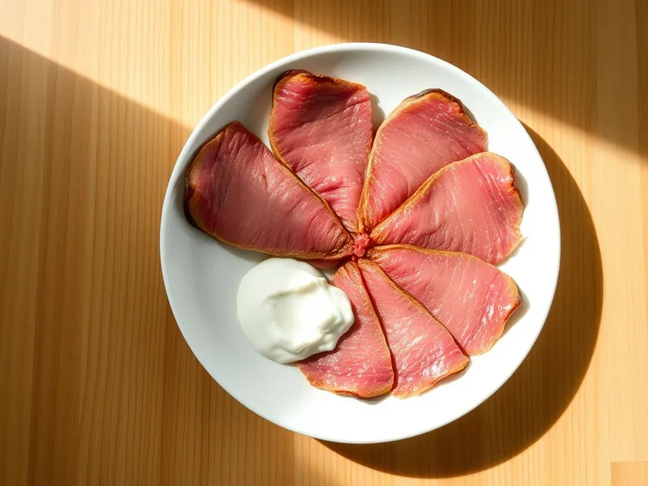

Говяжий язык отварной с хреном
Нежный отварной язык тонкими ломтиками с соусом из хрена и сметаны
180 мин6 порц.341 ккал на порциюБ 28 · Ж 24 · У 8Русская кухня
Открыть в приложении: порции, таймеры, список покупок
Продукты на 6 порц.
- Говяжий язык1 шт
- Лук репчатый1 шт
- Морковь1 шт
- Лавровый лист3 шт
- Перец чёрный молотый2 щеп.
- Соль2,5 ч. л.
- Вода3000 мл
- Хрен столовый2 ст. л.
- Сметана 20%4 ст. л.
Как готовить
- Хорошо промойте язык щёткой, залейте холодной водой и доведите до кипения на сильном огне. Варите 5 минут, слейте воду и промойте язык.
- Залейте свежей горячей водой и варите на слабом огне под приоткрытой крышкой 150 минут.
- За 30 минут до конца добавьте целые луковицу и морковь, лавровый лист, перец и соль. Язык готов, когда вилка легко входит в самую толстую часть.
- Переложите язык в миску с ледяной водой на 5 минут и снимите кожу, поддевая её ножом с толстого края.
- Верните очищенный язык в горячий бульон на 10 минут, чтобы он стал сочным.
- Смешайте хрен со сметаной. Нарежьте язык тонкими ломтиками поперёк и подавайте с соусом.
Совет. Храните язык прямо в бульоне в холодильнике до 3 дней: так он не заветривается и остаётся мягким.